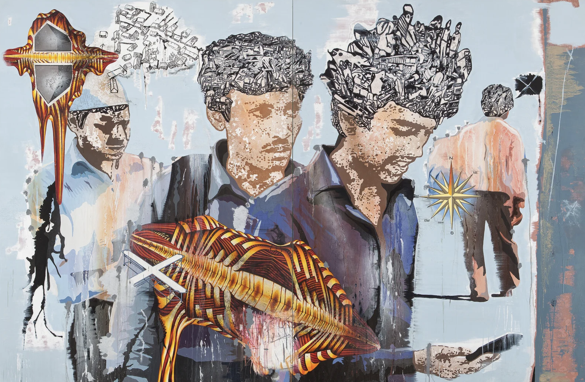
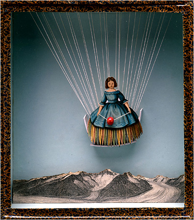

Vitamin P
Jitash Kallat
Jitash Kallat (b.1974) is a contemporary artist from Mumbai, India. His work spans painting, photography, collages, sculpture, installations, and multimedia forms of expression. He received his MFA in painting at the Sir JJ School of Art in Mumbai.
Artist found in Vitamin P2: New Perspectives in Painting, pp. 156–159, available on course reserve.


![[Describe the second painting]](../images/kallat-2.jpg)
![[Describe the third painting]](../images/killat-3.Jpg)
Joseph Cornell


Inside the box
In Joseph Cornell’s "Tilly Losch," a small figure in a blue dress hangs by thin strings above a black-and-white mountain range. A red bead rests against her skirt, and the empty blue space around her makes her seem both weightless and strangely confined. I interpret the box as a scene about nostalgia. The figure seems to be both youthful and ladylike in her blue dress, obscuring the lines between adolescence and womanhood. Moreover, the strings hold her in place as she appears to freely float over the mountains, perhaps a scene of familiarness yet current estrangement. When I think about my this work in relation to my shadow box, I may want to consider distance and memory as well, particularly as a migrant who frequently moves from place to place in a land that is not my home. I also appreciate the photographic style of this box, along with its minimal nature.